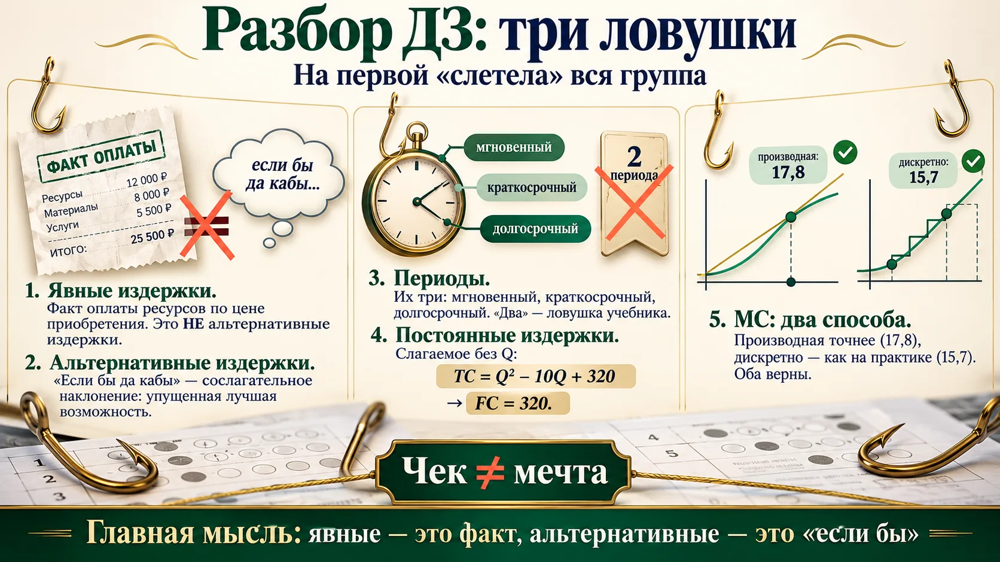
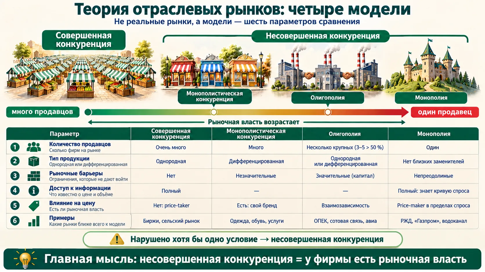
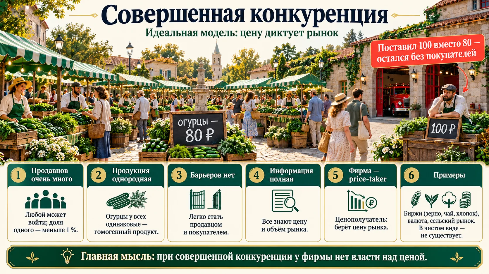
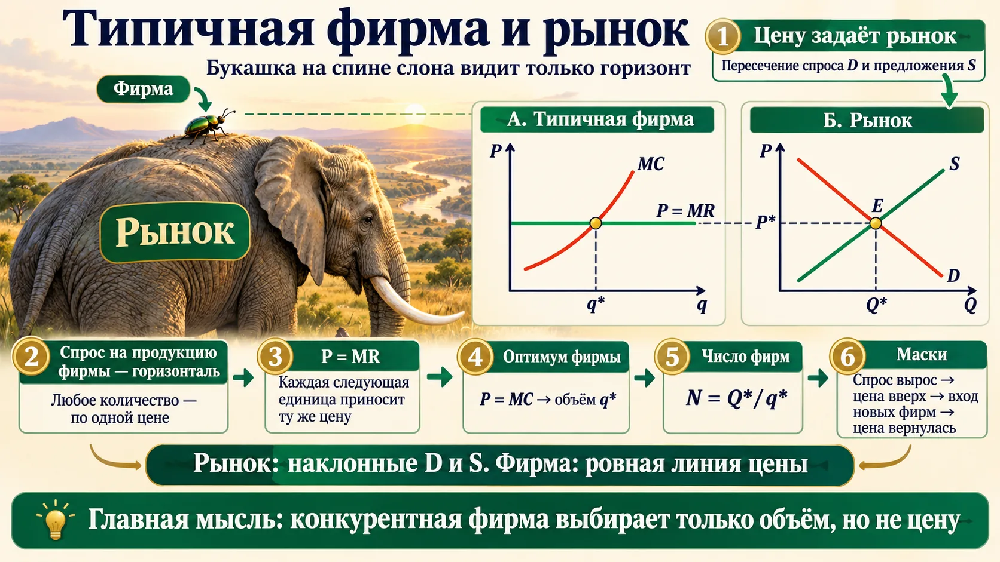
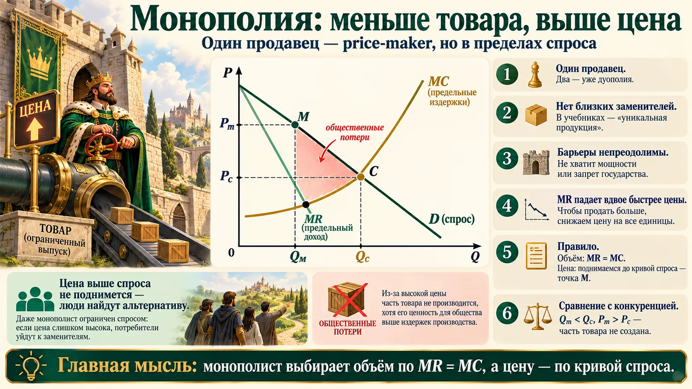
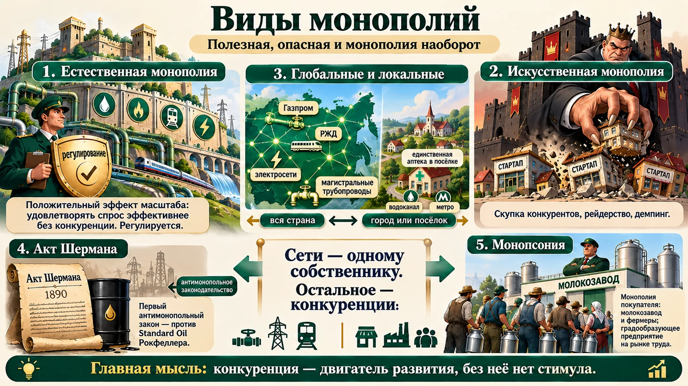
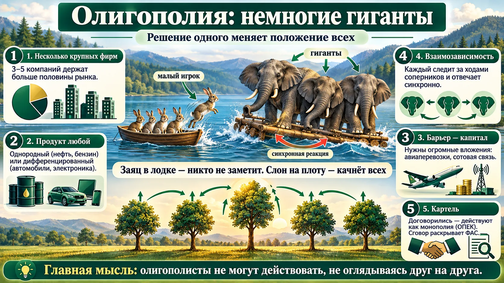
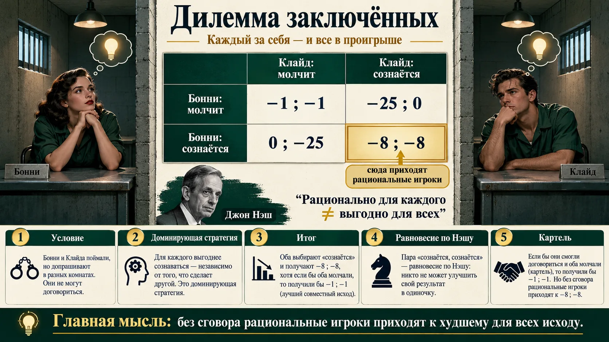
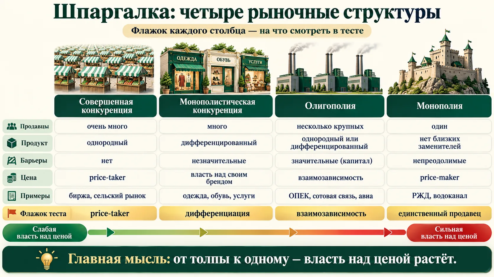

Разбор домашней работы: три ловушки
Занятие началось с проверки теста по издержкам. На одном вопросе «слетела» вся группа — запомните его.

«Явные издержки — альтернативные издержки в денежной форме» — НЕВЕРНО
«Явные — это факт оплаты ресурсов. При чём тут альтернативные издержки? Альтернативные возникают, когда мы оцениваем норму отдачи на труд и на капитал. Я вас хотела поймать — вас поймала». Формулировка взята из учебника, но по курсу явные (бухгалтерские) издержки — фактическая цена приобретения, а альтернативная оценка — признак неявных.
Альтернативные издержки — это «если бы да кабы», сослагательное наклонение (формулировка слушателя, преподаватель её одобрила).
MC(4) = 17,8 или 15,7?
Для TC = 48 + 5Q + Q² + 0,1Q³ слушатели получили два ответа. Через производную MC = 5 + 2Q + 0,3Q² = 17,8; дискретно TC(4) − TC(3) = 90,4 − 74,7 = 15,7. «Оба решения правильные. Производная точнее, но в реальной хозяйственной практике считают дискретно — мало кто выводит функцию».
Отсюда и ответ на вопрос о MR = MC: математически оптимум — равенство, а на практике выбирают последнюю единицу, для которой MR ещё не меньше MC.
Все ответы теста с разбором — на странице домашнего задания 5; они совпали с ключом преподавателя.
Теория отраслевых рынков: четыре модели, шесть параметров
«Моя самая любимая тема». Разверните лист альбомом и заполняйте таблицу по столбцам — к концу страницы она будет готова.

- Количество продавцов.
- Тип продукции — однородная (гомогенная) или дифференцированная (гетерогенная).
- Рыночные барьеры — ограничения, которые не дают войти на рынок.
- Доступ к экономической информации.
- Степень влияния на цену.
- Примеры рынков.
В каждом столбце выделите заливкой «флажок» — главную черту, на которую смотрят в тестах. Флажки собраны в шпаргалке в конце страницы.
Это модели, а не реальные рынки
«В чистом виде такого рынка, возможно, и нет, но большую часть рыночных структур можно распределить по этим типам» — как модели поведения потребителя: у одного человека могут быть черты двух. В тесте ищите признак, а не «похожесть».
🧭 Теория отраслевых рынков и Нобелевские премии
Теория отраслевых рынков (industrial organization) изучает, как структура рынка влияет на поведение фирм и цены. ➕ За работы в этой области Нобелевскую премию по экономике получили, в частности, Джордж Стиглер (1982 — регулирование и структура рынков) и Жан Тироль (2014 — «анализ рыночной власти и регулирования»). Источник: nobelprize.org.
Совершенная конкуренция: цену диктует рынок
Первый столбец таблицы. Флажок — price-taker.

| Параметр | Совершенная конкуренция |
|---|---|
| Продавцы | очень много, неограниченно; доля одного — меньше 1 % рынка |
| Продукция | однородная, стандартизированная (гомогенная) |
| Барьеры | отсутствуют: легко стать и продавцом, и покупателем |
| Информация | полная: известны цена и объём рынка |
| Влияние на цену | нет — фирма price-taker (ценополучатель, пишется через дефис) |
| Примеры | идеальная модель, в чистом виде не существует; близко — биржи (зерно, чай, хлопок), валютный рынок, сельский рынок |
- Хлебная биржа в Рыбинске: торговали не хлебом, а зерном — биржевой однородный товар.
- Село Вятское: площадь у пожарки, столы по периметру, «огурцы у всех одинаковые — сорта проверены поколениями». Любой может стать продавцом и покупателем, торг идёт в реальном времени.
- Морепродукты у рыбацкой деревни: ловят все в одном месте, ассортимент одинаковый.
- Валютный обменник, если бы он был просто коммерческой фирмой: курс на бирже 80 — обменник не поставит 100. «Может, конечно, но у него не будет покупателей».
Маркетплейс — не совершенная конкуренция
Слушатель спросил про Wildberries и Ozon. Если рассматривать конкретный товар — нет: товары брендированы, то есть дифференцированы, а это уже монополистическая конкуренция (раздел 7). «На рынке совершенной конкуренции каждая фирма может самостоятельно устанавливать цену» — неверно.
Типичная фирма и рынок: букашка на спине слона
Тема «со звёздочкой»: два графика рядом. Рынок задаёт цену, фирма выбирает только объём.

Маски близки к совершенной конкуренции: «нас не интересует их дифференциация, главное — гигиеническая функция». Спрос резко вырос → цена пошла вверх → типичная фирма увидела сигнал → барьеров нет, производители насыщают рынок → предложение растёт → цена вернулась к прежнему значению. В тренажёре: кнопка «Маски», затем «Долгий период».
➕ Дополнение: почему прибыль исчезает
В долгосрочном периоде вход и выход фирм продолжаются, пока цена не опустится до минимума средних общих издержек (P = min ATC). Экономическая прибыль становится нулевой — фирмы получают нормальную прибыль (урок 5, раздел 10). Источник: Н. Г. Мэнкью, «Принципы экономикс», гл. 14 «Фирмы на конкурентных рынках».
🧭 Рынок валюты: кто предъявляет спрос и предложение
Спрос на доллары: домохозяйства (поездки, сбережения), импортёры, государство (золотовалютные резервы, интервенции). Предложение: домохозяйства, продающие сбережения, экспортёры с валютной выручкой (продают её, чтобы платить в рублях, — рубль укрепляется), государство. «Наш Центральный банк отказался от регулирования этого рынка: какое-то время был коридор, сейчас его нет». ➕ Банк России перешёл к плавающему курсу в ноябре 2014 года. Источник: пресс-релиз Банка России от 10.11.2014 «О параметрах курсовой политики».
Монополия: меньше товара, выше цена
Вторая крайность. «Чтобы рассмотреть явление, рассмотрим его крайние позиции». Флажок — единственный продавец.

| Параметр | Монополия |
|---|---|
| Продавцы | один («а никак не два: два — уже дуополия») |
| Продукция | «уникальная» — нет близких заменителей |
| Барьеры | непреодолимые: не хватит мощности или есть государственный запрет |
| Информация | полная: монополист знает кривую спроса на свой продукт ⚠️ |
| Влияние на цену | price-maker (ценообразователь) — но только в пределах кривой спроса |
| Примеры | глобальные: «Газпром», электроэнергия, железные дороги; локальные: водоканал, ТГК-2, метро, одна аптека в посёлке |
Две спорные клетки таблицы
- «Уникальная продукция». Преподаватель считает формулировку неточной («продукт либо однородный, либо дифференцированный»), но велела писать как в учебниках: уникальная = нет близких заменителей.
- Информация «полная». «Я считаю это правильным, хотя, возможно, с источниками не совпаду». ➕ Во многих учебных таблицах доступ к информации при монополии — «ограниченный» (закрытость отрасли для посторонних). В тесте курса — «полная: монополист знает кривую спроса».
➕ Дополнение: «чистые потери» в учебниках
Общественные потери монополии в учебниках называют чистыми потерями (deadweight loss) или «треугольником Харбергера» — по имени Арнольда Харбергера, который в 1954 году первым оценил их для экономики США. Это сделки, выгодные и покупателю (он готов платить больше MC), и обществу, но не заключённые, потому что монополисту выгоднее продать меньше и дороже. Источник: Н. Г. Мэнкью, «Принципы экономикс», гл. 15 «Монополия».
Виды монополий, акт Шермана и монопсония
Не всякая монополия вредна: одни держатся на эффекте масштаба, другие — на захвате конкурентов.

Акт Шермана, США, 1890 год — против Standard Oil Рокфеллера (добыча, транспортировка и переработка нефти). Компанию принудительно разделили; Рокфеллер сохранил доли во всех частях, «и его состояние только увеличилось». Часть компаний-наследниц работает до сих пор.
➕ Уточнение: раздел произошёл в 1911 году по решению Верховного суда США на основании акта Шермана — на 34 компании (среди наследниц — ExxonMobil и Chevron). Источник: решение Верховного суда США Standard Oil Co. of New Jersey v. United States, 221 U.S. 1 (1911).
Скупка стартапов — современный способ убрать конкурента
«Многие компании по сей день занимают агрессивную позицию, уничтожая конкурентов всеми доступными способами, в частности скупкой стартапов. Google этим грешит». Конкуренция — двигатель развития: «отсутствие конкуренции — отсутствие стимула». По Адаму Смиту, конкуренция — «невидимая рука».
Естественная монополия ≠ монополистическая конкуренция
На разборе теста на вопрос «состояние рынка, при котором удовлетворение спроса более эффективно при отсутствии конкуренции» слушатель ответил «монополистическая конкуренция». Правильно — естественная монополия. «Мы здесь ради ошибок — я студентам за ошибки плюс ставлю».
🧭 Адам Смит и «невидимая рука»
Адам Смит (1723–1790) — шотландский экономист, автор «Исследования о природе и причинах богатства народов» (1776). «Невидимая рука» — образ того, как люди, преследуя собственную выгоду, через конкуренцию на рынке невольно служат интересам общества. Именно этот образ оспаривает дилемма заключённых (раздел 10): без конкуренции и без сговора личная выгода может вести к худшему для всех.
Монополистическая конкуренция: каждый — монополист своего бренда
«То, что посередине, — то, к чему я себя отношу». Флажок — дифференциация продукта.
| Параметр | Монополистическая конкуренция |
|---|---|
| Продавцы | много |
| Продукция | дифференцированная (гетерогенная) |
| Барьеры | незначительные: бренд, авторские права |
| Влияние на цену | есть: фирма — монополист своего бренда |
| Примеры | одежда, обувь, мебель, косметология, образовательные услуги, бытовая химия — «всё, что про бренды» |
Одежда — не олигополия, а «монополистическая» — не монополия
- «Примером олигополии могут являться рынки одежды, обуви, косметики» — неверно: продавцов много, «одежда никогда не договорится».
- «Особенностью монополистической конкуренции является продажа однородной продукции» — неверно: дифференцированной.
- Названия созвучны, но монополистическая конкуренция и монополия — «вообще не одно и то же».
Компания Rifle нашла подпольное производство «своих» джинсов в Ленинградской области. Представитель разобрал подделку и оригинал: «Мы никогда не пользуемся такими лекалами» (посадка), «таких тканей и дешёвой фурнитуры у нас нет». Ущерб — потеря клиентов: поклонники бренда заказывают вслепую, «раз не сели, два не сели — до свидания». Набор характеристик и делает продукт дифференцированным.
Ниша, которую «монстр» не закрывает
Слушатель-предприниматель: «Рынок, который мне интересен, не монополизирован — там конкуренция дифференцированного продукта. В своей нише я могу быть эффективнее огромного неповоротливого монстра: мои процессы запускаются “на коленке”, а там согласовывать до второго пришествия». Вопрос руководителю: по какой внутренней или внешней характеристике покупатель отличает ваш продукт от соседнего — и готов ли он за неё доплатить?
Ценовая дискриминация: один товар — разные цены
Возможна только там, где фирма контролирует продажи. На уроке 3 были степени — теперь добавились причины.
| Степень | Как назначается цена | Пример |
|---|---|---|
| Первая | каждому покупателю — своя цена | торг, индивидуальный расчёт стоимости |
| Вторая | в зависимости от объёма покупки | оптовые скидки, «3 по цене 2» |
| Третья | в зависимости от категории покупателя | пенсионеры, студенты, корпоративные клиенты; кино днём и вечером |
- Разные доходы.
- Разная готовность платить — не то же самое, что доход: «кто-то всё время выбирает одну марку одежды, кто-то — всегда новый айфон».
- Разная информированность: подписки и цифровые сервисы позволяют одним платить меньше, чем другим.
Где дискриминация возможна, а где нет
- При совершенной конкуренции ценовая дискриминация невозможна: цена единая, её устанавливает рынок.
- На рынках несовершенной конкуренции она существует — «там, где фирма контролирует продажу и цену, там, где price-maker».
- «Фирма на рынке монополистической конкуренции часто осуществляет ценовую дискриминацию» — по курсу верно (бестселлер: сначала коллекционное издание, потом обычное). ➕ В учебниках дискриминацию связывают прежде всего с монополией — но отвечайте по курсу.
- Ценовая дискриминация — не рыночный барьер: «нормальная хозяйственная практика, все так делают».
Включите «Монополия + дискриминация 1-й степени» в тренажёре раздела 5: объём вырастает до конкурентного, общественных потерь нет, но весь излишек покупателей забирает фирма.
Скидка — это стратегия, а не благотворительность
Тарифы для пенсионеров, корпоративный прайс, утренние сеансы, ранняя продажа билетов — способы продать тот же товар тем, кто не купил бы по общей цене, не снижая цену для остальных. Условие одно: покупатели не должны перепродавать товар друг другу, иначе разница цен исчезнет.
Олигополия: немногие гиганты
Несколько крупных фирм, которые не могут сделать ход, не оглядываясь друг на друга. Флажок — взаимозависимость.

| Параметр | Олигополия |
|---|---|
| Продавцы | несколько крупных: 3–5 фирм контролируют более 50 % рынка; по мощности примерно одинаковые |
| Продукция | однородная или дифференцированная: нефть, бензин, дизель — стандарт; автомобили, бытовая электроника — дифференцированный продукт |
| Барьеры | значительные, главный — величина капитала |
| Влияние на цену | есть, но каждый зависит от ходов соперников — взаимозависимость |
| Примеры | ОПЕК, «большая тройка» сотовых операторов, авиаперевозки, автопроизводство |
- Зайцы и слоны. Дед Мазай везёт зайцев — один скачет, «никакого влияния на лодку, мы даже не заметим». А на плоту три слона: один начинает раскачивать — «другие должны действовать синхронно, распределять свои туши, иначе потонут все».
- Деревья (олимпиадная задача). На участке растут деревья; одно вырывается вверх и закрывает другим солнце и влагу — они не дают ему вырваться. Рост останавливается у всех одновременно: дополнительные издержки роста становятся выше выгод.
«Олигополия — только однородная продукция» — неверно
У олигополии продукт бывает любым: автопроизводители — «дифференцированная олигополия». Решает число фирм и барьер-капитал, а не тип продукта.
Гибель «Локомотива» — экономика олигополии
«Это моё субъективное мнение». 7 сентября 2011 года под Ярославлем разбился самолёт с хоккейной командой «Локомотив». Авиаперевозки — отрасль, которой нужен большой капитал. Маленькая компания с четырьмя самолётами «экономит на топливе, на обучении сотрудников, на техническом обеспечении, на всём» — и это вылилось в ошибку пилота («взлетали на тормозах»). Вывод преподавателя: величина капитала в олигополии — не формальный барьер, а условие безопасной работы.
➕ Официально: Межгосударственный авиационный комитет назвал причиной катастрофы ошибочные действия экипажа — нажатие на тормозные педали при разбеге — и указал на нарушения в подготовке и допуске экипажа авиакомпанией «Як-Сервис». Источник: окончательный отчёт МАК (2012).
Теория игр: дилемма заключённых
Сначала сыграйте сами — как группа на занятии. Картинка с ответом — после игры.
Бонни и Клайд попались на мелком преступлении — каждому грозит год. Их посадили в разные камеры, договориться нельзя. Полицейский каждому отдельно: «Мы знаем про ваши прежние ограбления. Сознаетесь — срок зависит и от того, что скажет партнёр». Оба молчат — по году. Оба сознались — по 8 лет. Один сознался, другой нет — сознавшийся выходит на свободу, молчавший получает 25 лет.
Что выберете вы? Сделайте ход в тренажёре, прежде чем читать дальше.
Девушки играли за Бонни, мужчины — за Клайда, совещались в разных комнатах. Мужская команда начала с «не сдадим», потом посчитала: «если сознаемся — 0 или −8, если молчим — −1 или −25; минус 8 и минус 25 — это разные вещи», «не хочу играть в рулетку». Обе команды сознались — по 8 лет.
Потом — та же игра на деньги: Дед Мороз предлагает каждому «согласиться — получишь миллион» или «отказаться — тогда твои 2 миллиона уйдут партнёру». Оба отказались — по 2 млн, оба согласились — по 1 млн, согласился один — 3 и 0. «Нужен всегда контекст»: на деньгах группа просчитала игру мгновенно.

Два производителя нефти договорились сократить добычу: предложение падает, цена растёт — «за те же объёмы больше денег». Но у каждого «фига в кармане»: «ничем особо не рискую, если чуть-чуть открою хранилище». Оба потихоньку наращивают добычу — и цена сползает к исходной. Кейс «разбирается во всех учебниках». В тренажёре — сюжет «Картель ОПЕК».
🧭 Джон Нэш и «Игры разума»
Джон Нэш (1928–2015) — американский математик, лауреат Нобелевской премии по экономике 1994 года (вместе с Джоном Харсаньи и Райнхардом Зельтеном) за анализ равновесия в некооперативных играх. Фильм «Игры разума» (2001, Рассел Кроу) рассказывает о его жизни и борьбе с шизофренией.
Преподаватель показала сцену в баре: Нэш доказывает друзьям, что если все бросятся к самой яркой девушке, все проиграют. Критики замечают, что это не равновесие по Нэшу: если все пошли к подругам, одному выгодно в одиночку пойти к блондинке. «Нас про это не спросят».
➕ Саму игру придумали Меррилл Флуд и Мелвин Дрешер (корпорация RAND, 1950), название «дилемма заключённых» дал математик Альберт Таккер. Нэш и его жена Алисия погибли в автокатастрофе в такси 23 мая 2015 года. Источник: nobelprize.org.
Где дилемма встречается руководителю
- Ценовая война: двум сетям выгоднее держать цены, но каждой — снизить первой.
- Реклама: обе фирмы тратятся, доли рынка не меняются.
- Внутри организации: отделам выгодно делиться ресурсами, но каждому — придержать свои.
Выход из дилеммы — повторяющаяся игра и репутация («зеркало» в тренажёре), договоры с проверкой исполнения, общие цели. Но помните: сговор конкурентов о ценах запрещён антимонопольным законом.
Тест по рыночным структурам
Тот же лист, что был выдан домой: на занятии его решили заново «осознанно, глядя на таблицу» и разобрали с преподавателем.
Пять суждений «верно/неверно», пять вопросов с одним ответом, пять — с несколькими и пять задач. Ответы сверены с ключом преподавателя; где учебники отвечают иначе, это разобрано в пояснении.
Что выучить к аттестации
Отмечайте пункт, когда можете объяснить его своими словами без подсказки. Отметки сохраняются в браузере.
Шестое занятие готово к аттестации.
Проверьте себя
Пятнадцать вопросов в формате теста. После ответа — правильный вариант и короткий разбор.
1. «Явные (денежные) издержки — альтернативные издержки, которые принимают форму денежных платежей». По курсу это суждение…
2. Рынок относится к несовершенной конкуренции, если…
3. Фирма на рынке совершенной конкуренции…
4. Для фирмы на рынке совершенной конкуренции предельный доход MR…
5. Рыночный спрос при равновесной цене — 3 600 единиц, типичная фирма выпускает 36. Сколько фирм в отрасли?
6. Монополист выбирает объём выпуска по правилу…
7. По сравнению с конкурентным рынком монополия…
8. Состояние рынка, при котором удовлетворение спроса более эффективно при отсутствии конкуренции, — это…
9. Градообразующее предприятие — единственный работодатель в городе. Это пример…
10. Первое антимонопольное законодательство…
11. Главная отличительная черта монополистической конкуренции:
12. Рынки одежды, обуви и косметики — пример…
13. Ценовая дискриминация невозможна…
14. Главный барьер входа в олигополию:
15. В дилемме заключённых оба игрока сознаются, потому что…
Отвечено: 0 / 15
Шпаргалка: четыре рыночные структуры

| Параметр | Совершенная конкуренция | Монополистическая конкуренция | Олигополия | Монополия |
|---|---|---|---|---|
| Продавцы | очень много (< 1 % у одного) | много | несколько; 3–5 > 50 % | один |
| Продукция | однородная | дифференцированная | однородная или дифференцированная | нет близких заменителей |
| Барьеры | нет | незначительные | значительные (капитал) | непреодолимые |
| Информация | полная | — | — | полная (знает кривую спроса) |
| Цена | price-taker | власть над своим брендом | взаимозависимость | price-maker |
| Примеры | биржи, сельский рынок, валюта | одежда, обувь, мебель, услуги | ОПЕК, сотовая связь, авиа, авто | «Газпром», РЖД, водоканал, метро |
| Флажок | price-taker | дифференциация | взаимозависимость | единственный продавец |
- Несовершенная конкуренция — нарушено хоть одно условие идеала; у фирмы есть рыночная власть.
- Конкурентная фирма — price-taker: P = MR, выпуск до P = MC, N = Q* / q*.
- Монополист — price-maker: объём по MR = MC, цена по кривой спроса; товара меньше, цена выше, есть общественные потери.
- Естественная монополия держится на эффекте масштаба и регулируется; монопсония — монополия покупателя.
- Монополистическая конкуренция — много монополистов своих брендов; флажок — дифференциация.
- Ценовая дискриминация возможна только у price-maker; причины — доходы, готовность платить, информированность.
- Олигополия — взаимозависимость немногих; картель превращает их в монополию.
- Дилемма заключённых: без сговора рациональные игроки приходят к худшему для всех исходу.
Микроэкономика закончена. 5 ноября — последнее занятие: макроэкономика, инфляция и безработица, и тест такого же формата, который сдаётся как экзаменационная работа. «Делайте по-честному сначала — проверим, подпишете и сдадите».